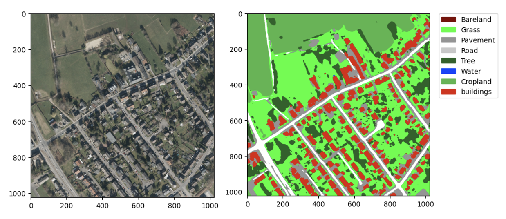
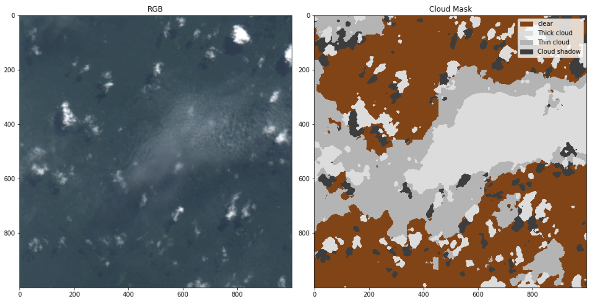
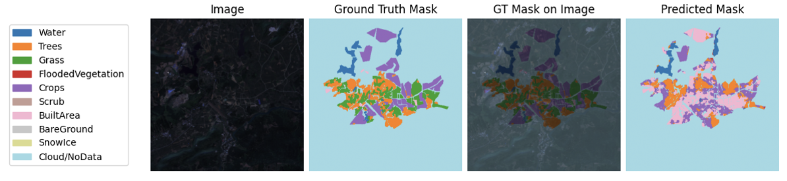

2024 (4 months) — Data Scientist & ML Engineer Intern at Ministère des Armées (Marine Nationale), Paris
📂 Project Details & Technical Summary
Thales Alenia Space Luxembourg, 2025
High Resolution Land Use Land Cover Segmentation: Developed a high-res land-cover segmentation prototype (U-Net + EfficientNet-B4).

Cloud Detection and Segmentation: Benchmarked cloud segmentation models (OmniCloudMask, Dynamic World U-Net) on Sentinel-2/Landsat.

Foundation Model for Earth Observation: Adapted and trained the TerraMind foundation model on 12-band imagery; YAML-based configs & custom preprocessing.

Probabilities of Model Output Visualisations: Created confidence/uncertainty visualizations for decision support.